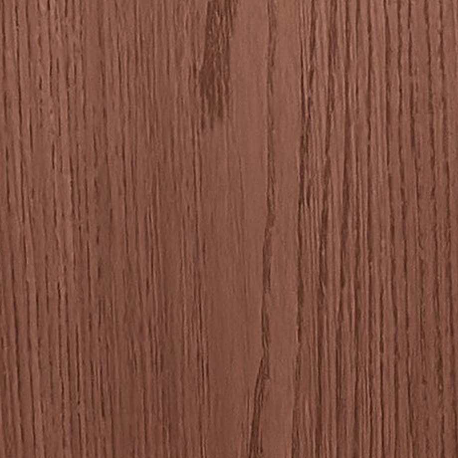

Artboard · voorstel · nog niets aangepast · alleen H1-test
Het donkere blok "Het verschil zit vanbinnen" en "Waarom Puredeco" worden één blok. Bovenaan de boodschap en een echte knop, in het midden het bewijs (een echte uitsnede van de productfoto en de opbouw), onderaan vier korte redenen met positieve koppen. Alles wat dubbel stond, gaat eruit.
Waarom Puredeco
Een wand haal je er niet zomaar weer af. Kies hem één keer goed.

Eén paneel van 122 × 280 cm, licht genoeg om zelf te tillen. Geen breekwerk, geen tegelzetter.
De helft minder naden dan bij panelen van 60 cm, en ook minder dan bij 1 meter. In 8 mm met klik vrijwel naadloos.
Een kern van behandeld bamboe met een hoge dichtheid. Waterbestendig, en te buigen voor een ronde wand.
Hout, leer, Japandi-stof, travertin: toplagen die je ziet én voelt. Die keuze vind je bij SPC niet.
Waarom Puredeco
Een wand haal je er niet zomaar weer af. Kies hem één keer goed.
Eén paneel van 122 × 280 cm, licht genoeg om zelf te tillen. Geen breekwerk, geen tegelzetter.
De helft minder naden dan bij panelen van 60 cm, en ook minder dan bij 1 meter. In 8 mm met klik vrijwel naadloos.
Een kern van behandeld bamboe met een hoge dichtheid. Waterbestendig, en te buigen voor een ronde wand.
Hout, leer, Japandi-stof, travertin: toplagen die je ziet én voelt. Die keuze vind je bij SPC niet.
Punt 5 (beoordelingen of aantal geplaatste wanden) zet ik erbij zodra je cijfers hebt; er is al een plek onder de knop.